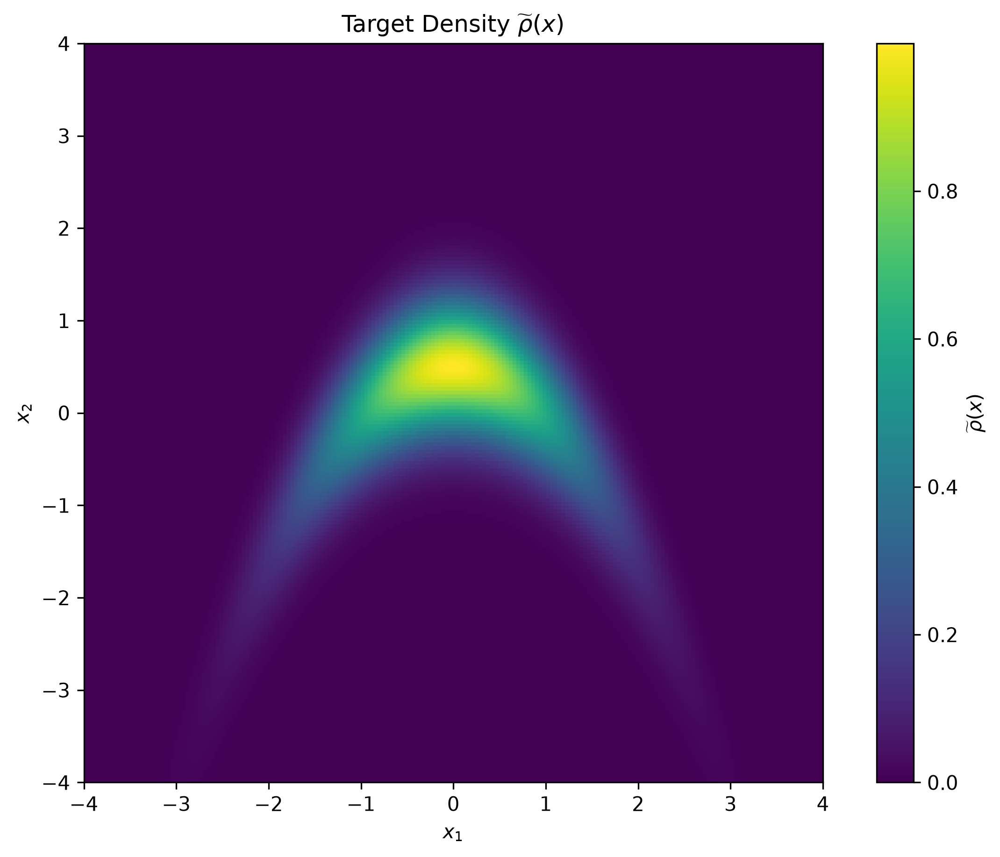
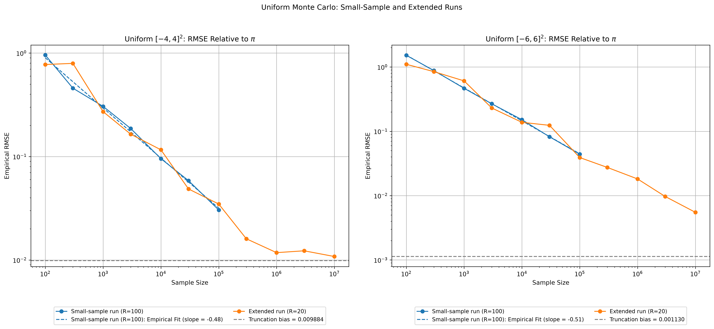
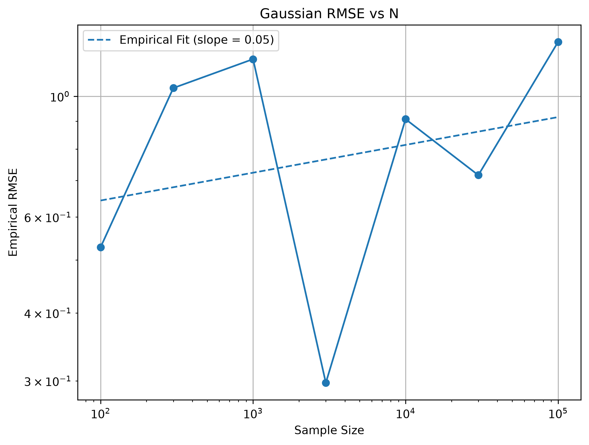
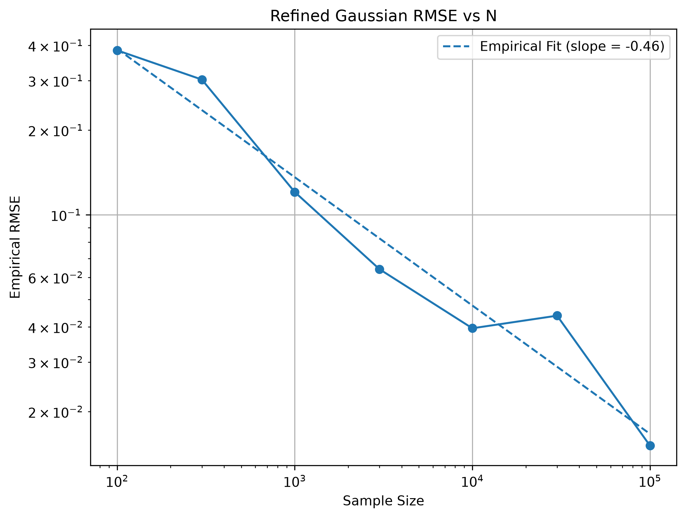
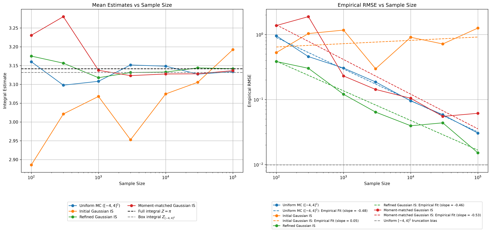
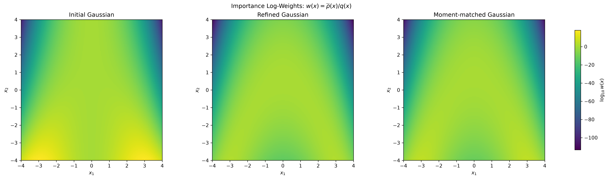

文章简介
这份实验整理回答什么
这篇文章整理 monte-carlo 项目的结果：对一个可以解析求出真值的二维目标，用均匀采样和重要性采样估计归一化常数，并比较不同建议分布在有限样本下的表现。
关注点不是“哪种方法最好”，而是三件更具体的事：均匀采样的截断偏差在多大样本量下开始主导误差；高斯建议分布的形状如何影响权重的尾部；以及有限次重复得到的经验 RMSE 能说明什么、不能说明什么。
问题与真值
一个沿抛物线弯曲的目标
未归一化密度取为
\[ \widetilde{\rho}(x_1,x_2) =\exp\left[-\frac{x_1^2}{2} -\frac{(2x_2+x_1^2-1)^2}{2}\right], \qquad Z=\int_{\mathbb R^2}\widetilde{\rho}(x)\,dx . \]
固定 \(x_1\) 时，\(\widetilde{\rho}\) 关于 \(x_2\) 是一个方差为 \(1/4\) 的高斯核，均值落在 \(x_2=(1-x_1^2)/2\) 上。因此高密度区域沿这条抛物线分布，而不是集中在一个圆形或椭圆形的众数附近。
令 \(u=x_1\)、\(v=2x_2+x_1^2-1\)，逆变换的 Jacobian 绝对值为 \(1/2\)，于是
\[ Z=\frac12\int_{\mathbb R^2}e^{-(u^2+v^2)/2}\,du\,dv=\pi . \]
这给了我们一个精确真值 \(\pi\)，使所有经验误差都可以直接对照，而不需要嵌套估计。
均匀采样只能在有限区域上进行。在 \([-4,4]^2\) 上， \(Z_{[-4,4]^2}\approx 3.131708411797\)，截断偏差约为 \(-0.009884241793\)；在 \([-6,6]^2\) 上， \(Z_{[-6,6]^2}\approx 3.140462\)，截断偏差约为 \(-0.001130\)。 本文所有经验 RMSE 都以完整真值 \(\pi\) 为参照，因此均匀采样的结果里天然包含这部分截断误差。
方法
从均匀采样到重要性采样
对密度为 \(p\) 的采样分布，Monte Carlo 积分估计量为
\[ \widehat Z_N=\frac1N\sum_{i=1}^N f(X_i), \qquad X_i\overset{\text{i.i.d.}}{\sim}p, \]
其中 \(f=\widetilde{\rho}/p\)。当 \(\widehat Z_N\) 无偏时， \(\operatorname{MSE}=\operatorname{Var}(\widehat Z_N)=\sigma^2/N\)； 若存在偏差 \(b\)，则 \(\operatorname{MSE}=\sigma^2/N+b^2\)。 这正是后面区分“方差主导”和“偏差主导”的依据。
均匀采样取 \(p=\mathcal U(\Omega)\)，估计量为 \(\widehat Z_N^{\mathrm{Unif}}=\mu(\Omega)N^{-1}\sum_i\widetilde{\rho}(X_i)\)； 重要性采样取建议分布 \(q\)，估计量为
\[ \widehat Z_N^{\mathrm{IS}} =\frac1N\sum_{i=1}^N\frac{\widetilde{\rho}(Y_i)}{q(Y_i)}, \qquad Y_i\overset{\text{i.i.d.}}{\sim}q . \]
在本题中 \(q\) 取二维高斯。为了让比较集中在“建议分布设计”这一步，三种高斯方案共享同一套抽样、对数权重计算和重复估计流程，只改变均值与协方差：
| 方法 | 建议分布 / 采样分布 | 设计依据 |
|---|---|---|
| Uniform MC | \(U([-4,4]^2)\) | 估计截断积分，对完整积分有固定偏差 |
| Uniform MC（大区域） | \(U([-6,6]^2)\) | 偏差更小，但同时引入更大的采样方差 |
| Initial Gaussian IS | \(\mathcal N((0,0.5),\operatorname{diag}(1,0.25))\) | 众数处的局部 Hessian 近似 |
| Moment-matched Gaussian IS | \(\mathcal N((0,0),\operatorname{diag}(1,0.75))\) | 匹配目标分布的一、二阶矩 |
| Refined Gaussian IS | \(\mathcal N((0,0),\operatorname{diag}(2.46006384,1.40547353))\) | 在 \(N=10^4\) 上最小化经验 RMSE 调参 |
| Exact sampling | \(q=\widetilde{\rho}/\pi\) | 解析采样对照，权重恒为 \(\pi\) |
精确采样利用本题的换元结构：先取 \(X_1\sim\mathcal N(0,1)\)，再取 \(X_2\mid X_1=x\sim\mathcal N\!\left(\frac{1-x^2}{2},\frac14\right)\)。 此时样本恰好来自归一化目标，权重恒为 \(\pi\)，理论方差为零。 它只用于检查抽样与估计流程的实现，不代表一般未知归一化常数问题也有这样的捷径。
实验设置
同一批重复估计，同一套统计口径
主实验取 \(N\in\{100,300,1000,3000,10000,30000,100000\}\)，每个 \(N\) 独立重复 \(R=100\) 次。 此外，均匀采样另做了大样本扩展：\(N\) 从 \(10^2\) 延伸到 \(10^7\)，每个 \(N\) 重复 \(R=20\) 次。 六个主实验入口合计 \(6\times7\times100=4{,}200\) 条重复估计，大样本扩展再增加 \(2\times11\times20=440\) 条，共 4,640 条。
流程分为三层：results/raw/ 保存每一轮重复估计；results/summary/
按方法和 \(N\) 汇总均值、偏差、样本方差、RMSE 及绝对误差分位数；比较图只读取同一份 summary。
这样比较图中的均值与 RMSE 来自同一批数据，不会出现“图用一套样本、表用另一套样本”的情况。
调参与正式评价使用不同的随机流：调参固定 seed=20261008，四方法比较使用
seed=20260930。调参只在 \(N=10^4\)、\(R=100\) 的预算下搜索，得到的参数随后固定，不参与正式评价。
单方法估计图展示的是每个 \(N\) 的第一轮估计，而四方法比较图展示 \(R\) 次重复的均值；两者的 RMSE 都用全部重复估计计算。 读图时需要区分这两个不同的统计量。
结果一
均匀采样：先看到收敛，再看到截断下界

在 \([-4,4]^2\) 和 \([-6,6]^2\) 两个区域上，均匀采样的经验 RMSE 在双对数坐标下都近似线性下降， 拟合斜率分别为 \(-0.48\) 和 \(-0.51\)，接近通常的 \(N^{-1/2}\)。在 \(N\le10^5\) 的范围内，主要由采样方差决定误差。
大样本扩展则显示出两种不同的极限行为。\([-4,4]^2\) 的 RMSE 在 \(N\approx10^6\) 之后趋于平缓， 到 \(N=10^7\) 时为 \(0.010810\)，已经贴近截断偏差 \(|b|=0.009884\)； 继续增大样本量只能把方差压小，无法消除这部分固定偏差。 \([-6,6]^2\) 的偏差只有 \(0.001130\)，但区域更大、单样本方差更高，因此在中小样本下 RMSE 反而更大； 随着 \(N\) 增大，它在 \(10^6\) 到 \(10^7\) 之间反超，并在 \(N=10^7\) 达到 \(0.005502\)。
| \(N\) | \([-4,4]^2\) RMSE | \([-4,4]^2\) 偏差 | \([-6,6]^2\) RMSE | \([-6,6]^2\) 偏差 |
|---|---|---|---|---|
| \(10^5\) | 0.034756 | −0.014861 | 0.039102 | +0.003700 |
| \(10^6\) | 0.011786 | −0.009005 | 0.018171 | −0.003767 |
| \(10^7\) | 0.010810 | −0.010386 | 0.005502 | −0.000400 |
这两组大样本数字各只有 20 次重复，单点波动不可忽略，适合看趋势而不是比较小数点后几位。

结果二
高斯建议分布：形状比众数更重要
初始高斯方案把均值放在众数 \((0,0.5)\)，协方差取众数处的局部 Hessian 逆， 看起来是一个“标准”的高斯近似。但它的经验 RMSE 几乎不随 \(N\) 下降： \(N=100\) 时为 \(0.528\)，\(N=10^5\) 时反而升到 \(1.258\)。 原因是这条弯曲的脊线远离众数后仍然有不可忽略的密度，而初始建议分布在那些位置迅速衰减， 偶发的大权重把平方误差拉高。


匹配目标的一、二阶矩（\(m=(0,0)\)，\(\Sigma=\operatorname{diag}(1,0.75)\)）纠正了均值位置， 但没有解决“目标沿曲线分布、建议分布是椭圆”的结构错配，因此只是把误差拉回和均匀采样相近的量级。 以 \(N=10^4\)、固定随机流最小化经验 RMSE 得到的调参方案，则把协方差放大到 \(\operatorname{diag}(2.4601,1.4055)\)，让建议分布覆盖更宽的脊线区域，在当前预算下取得最低误差。

下表列出四个方法在 7 个样本量上的经验 RMSE，数值直接取自同一份 summary。
| \(N\) | Uniform MC | Initial Gaussian | Moment-matched Gaussian | Refined Gaussian |
|---|---|---|---|---|
| 100 | 0.956330 | 0.527914 | 1.375167 | 0.384484 |
| 300 | 0.457914 | 1.035333 | 1.884500 | 0.302643 |
| 1,000 | 0.305172 | 1.169970 | 0.230737 | 0.120585 |
| 3,000 | 0.186589 | 0.297524 | 0.143133 | 0.064131 |
| 10,000 | 0.095375 | 0.907684 | 0.104686 | 0.039548 |
| 30,000 | 0.058480 | 0.716193 | 0.055093 | 0.043841 |
| 100,000 | 0.030459 | 1.258050 | 0.061507 | 0.015139 |
\(N=10^5\) 时，调参后高斯的 RMSE 为 \(0.0151\)，低于均匀采样的 \(0.0305\)； 但均匀采样的误差里含有 \(0.0099\) 的截断偏差，两者并不是同一类误差。 初始高斯的中位绝对误差只有 \(0.160\)，RMSE 却达到 \(1.258\)，最大误差 \(12.13\)， 说明平方误差几乎被少数极端重复主导。这也是为什么表里同时保留分位数和最大值：
| 方法（\(N=10^5\)） | 经验 RMSE | 中位绝对误差 | 95% 分位绝对误差 | 最大绝对误差 |
|---|---|---|---|---|
| Uniform MC \([-4,4]^2\) | 0.030459 | 0.021671 | 0.057311 | 0.080882 |
| Initial Gaussian IS | 1.258050 | 0.159956 | 0.278879 | 12.126419 |
| Moment-matched Gaussian IS | 0.061507 | 0.027735 | 0.093149 | 0.446999 |
| Refined Gaussian IS | 0.015139 | 0.009119 | 0.029311 | 0.063860 |

结果边界
为什么高斯 IS 的有限样本曲线不能外推
对本实验采用的对角高斯建议分布 \(q=\mathcal N((0,a),\operatorname{diag}(b,c))\)，权重的二阶矩实际上是无穷的。 仍取 \(y_1=x_1\)、\(y_2=2x_2+x_1^2-1\)，在 \(|y_2|\le1\) 的带状区域内，
\[ \log\frac{\widetilde{\rho}(x)^2}{q(x)} =\frac{y_1^4}{8c}+O(y_1^2), \qquad y_1\to\infty . \]
由于 \(c>0\)，被积函数沿 \(y_1\) 方向以 \(\exp(y_1^4/(16c))\) 量级增长， \(\int_{\mathbb R^2}\widetilde{\rho}(x)^2/q(x)\,dx\) 发散。也就是说， \(\operatorname{Var}_q(w)=\infty\)，理论 MSE 和 RMSE 对任意有限 \(N\) 都是无穷。 三个高斯方案都满足 \(\mathbb E_q[w]=\pi<\infty\)，所以估计量仍然无偏且强相合； 但“无偏”与“有限方差”是两件事。
这解释了一个容易误读的现象：调参后高斯在 \(N=10^5\) 上有最小的经验 RMSE， 但这批 100 次重复并没有抽到足够极端的样本，经验方差仍然是有限的。 图中的拟合斜率 \(-0.46\) 只描述这 7 个点的有限样本表现，不能据此断言普通的 \(N^{-1/2}\) 收敛率。 若要真正比较理论效率，需要讨论权重的尾指数或采用有界权重的建议分布。
精确采样对照从另一侧验证了流程：权重恒为 \(\pi\)，经验 RMSE 为零或机器精度量级 （summary 中约 \(4.4\times10^{-16}\)）。由于零 RMSE 无法放在对数坐标上，它没有进入四方法比较图。
结论
这批结果支持与不支持的结论
- 均匀采样对截断积分无偏，对完整积分有固定偏差；在 \([-4,4]^2\) 上，这个偏差在 \(N\approx10^6\) 之后成为误差主导项，约 \(0.0099\) 的误差下界无法靠增大 \(N\) 消除。
- 扩大积分区域可以减小截断偏差，但会提高单样本方差；在本实验中，\([-6,6]^2\) 要到 \(10^6\) 至 \(10^7\) 之间才在 RMSE 上反超 \([-4,4]^2\)。
- 对弯曲目标，匹配均值与协方差不足以描述结构；初始高斯在众数处局部正确，整体却严重错配，经验 RMSE 不随 \(N\) 稳定下降。
- 在当前预算与固定随机流下，调参后的高斯方案经验 RMSE 最低，但这只是有限样本、单一评价种子的结果，且其权重二阶矩仍然发散。
- 精确采样对照给出零方差基准，验证了抽样与估计实现；它依赖本题的解析结构，不是通用解法。
复现
代码与数据在哪里
代码、raw 结果、summary、图表和 LaTeX 报告都在 mnfe2o4/monte-carlo。 从已有 raw 重建统计结果和比较图，不需要重新采样：
.\.venv\Scripts\python.exe -m experiments.export_summary
.\.venv\Scripts\python.exe -m experiments.comparison
results/summary/summary.csv 按方法和 \(N\) 汇总 64 行统计量，
包含均值、偏差、样本方差、RMSE、绝对误差中位数、95% 分位数与最大值。
实验的样本量、重复次数、随机种子和依赖版本记录在 configs/experiment_config.json。
尚未覆盖的部分包括：不同随机种子下的稳定性、计算时间比较、以及有界权重建议分布的设计。 这些会决定“哪种建议分布更好”能否从经验观察上升为更一般的结论。
回到首页